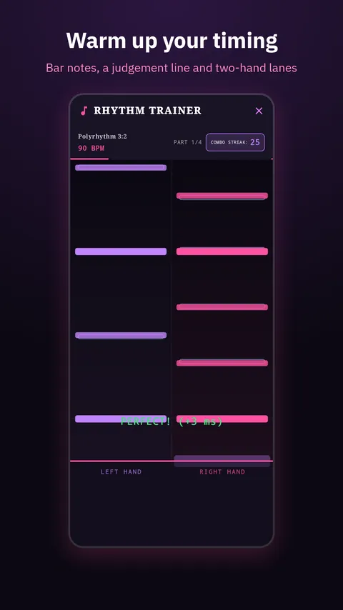
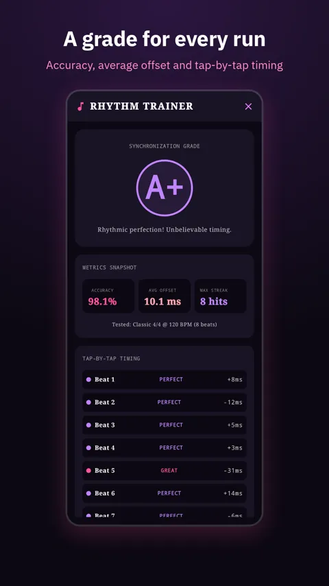
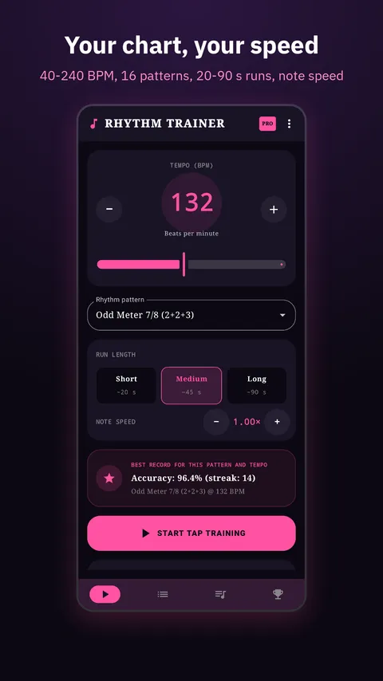
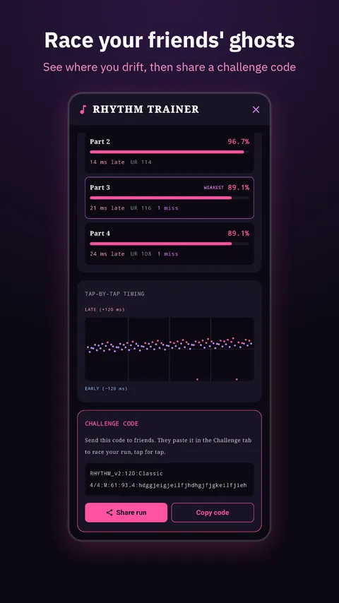

Hatch Day
Hatch Day: Egg Incubator AppEgg incubator tracker: hatch countdown, temperature and humidity targets, turning and lockdown reminders.
Pick a tempo, tap along with the beat and see exactly how early or late you were, in milliseconds. A fast way for drummers, musicians, dancers and beginners to build a steady internal clock.

Every tap gets a rating (Perfect, Great, Good or Okay) and its exact offset in ms. A live timeline shows whether you're rushing or dragging.
Train slow for control or push your speed, with a 4-beat count-in like a real metronome count-off.
Classic 4/4, waltz 3/4, syncopated shuffle, poly-beat and gallop, plus odd time signatures 5/4, 7/4, 5/8, 6/8, 7/8 and Balkan 9/8 with accented groupings.
Play several patterns and tempos back to back like a workout, or build your own tempo ladders.
Accuracy %, a grade from A+ to F, combo streaks, average drift and a best record for each pattern and tempo.
Beats are timed from the audio clock and speaker delay is measured. A quick calibration handles Bluetooth headphone latency.



Free to use with ads. Pro is a monthly or yearly subscription, or a one-time lifetime purchase. Prices are shown in the app in your local currency.
It plays a beat like a metronome, but its job is to score you: every tap is measured against the beat so you can see and fix your timing.
Yes. Run the quick tap-along latency calibration once so your headphones' delay isn't counted against you.
Drummers, guitarists, bassists, pianists and other musicians working on timing and subdivisions, music students, dancers and anyone who wants a steadier sense of rhythm.
5/4, 7/4, 5/8 (3+2), compound 6/8, 7/8 (2+2+3) and Balkan 9/8 (2+2+2+3), with accents on each group.
Read the privacy policy and Terms & Conditions. Questions or feedback: support@mintwavestudio.com.
Egg incubator tracker: hatch countdown, temperature and humidity targets, turning and lockdown reminders.
Cable size, voltage drop and breaker checks to IEC 60364 for electricians. Offline.
Run many countdown timers at once, plus stopwatches, Pomodoro and interval timers. No ads.